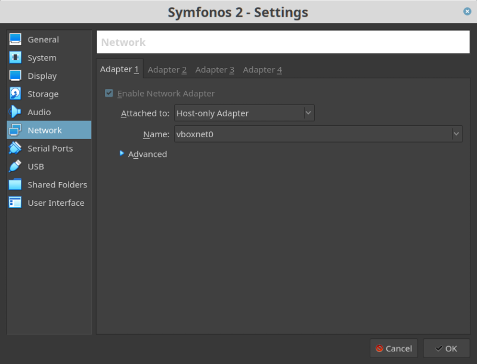
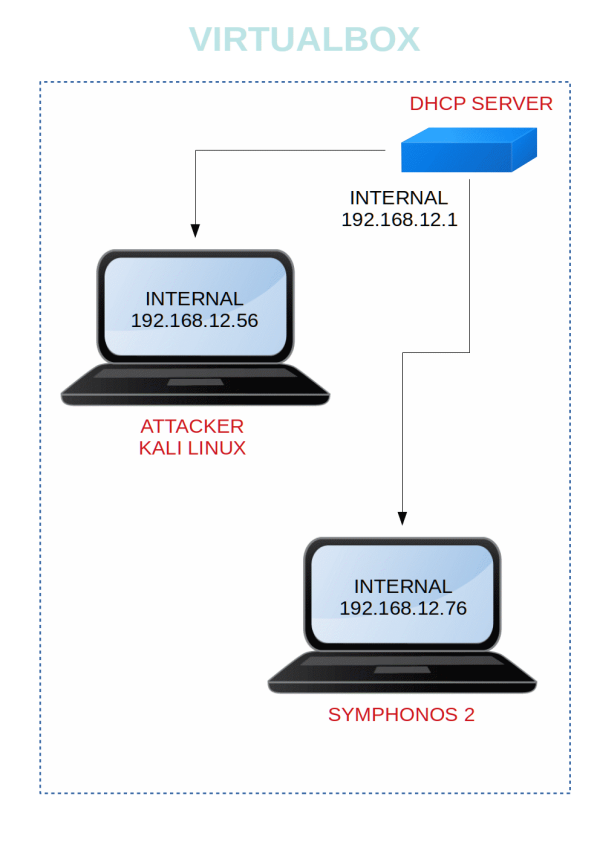

Symfonos 2
▸ Symfonos 2
▸ 1. Scan Network
▸ 2. Finding Services and Ports
▸ 3. Enumerate
▸ 4. Explotiation
▸ 4.1 Netstat
▸ 4.2 Open a Tunnel
▸ 4.3 Search exploit
▸ 4.4 Get a Command Shell
▸ 5. Privilege Escalation and Catch the flag
Difficulty: Intermediate.
Flag: 1 flag.
Learning:
• NMAP
• Enum4Linux
• Smbclient
• Hydra
• Msfconsole
• Exploiting Sudo rights
• Catch the flag
• Download: https://drive.google.com/uc?id=10w0gaRsLFEGdn60GQh_fvMyZFTHbUP_6&export=download
• Download (Mirror): https://download.vulnhub.com/symfonos/symfonos2.7z
• Download (Torrent): https://download.vulnhub.com/symfonos/symfonos2.7z.torrent
Install the machine on VirtualBox:
1. Download the file and extract it.
2. On Virtualbox choose File->Import Appliance.
3. Select the file “ovf”.
4. Accept to import.


Watch your Machine IP.
Output:

Diagram
 Index
Index